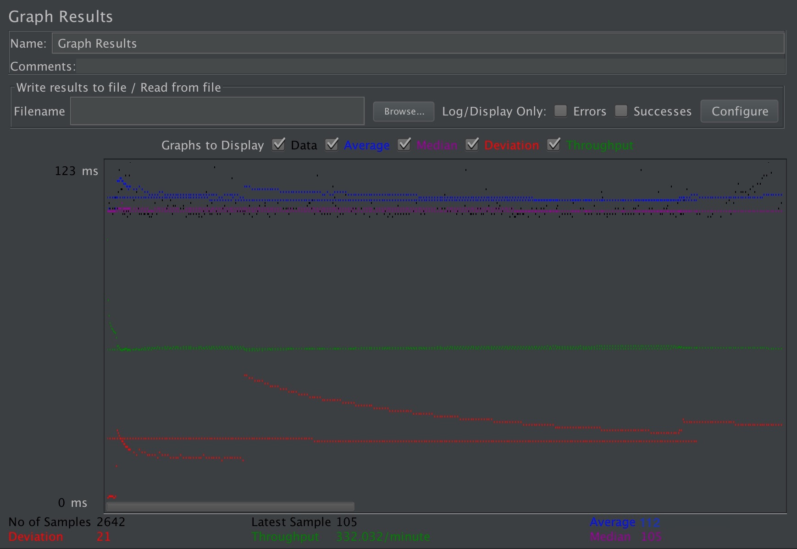
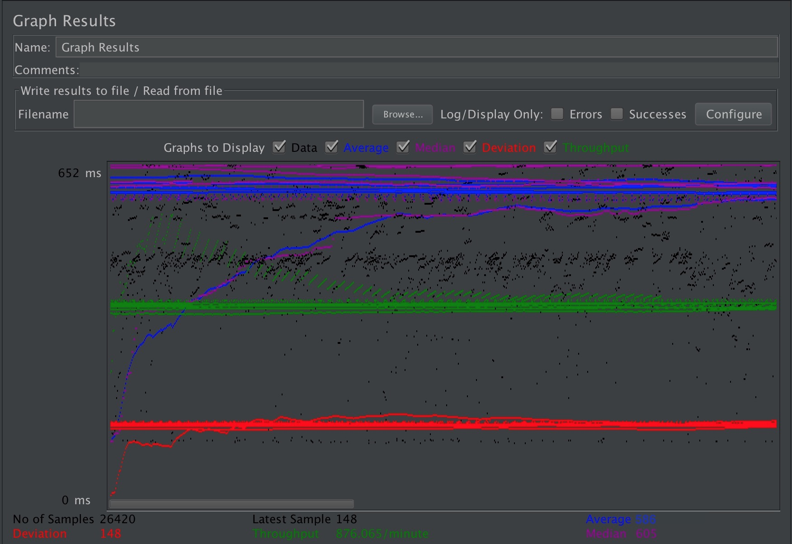
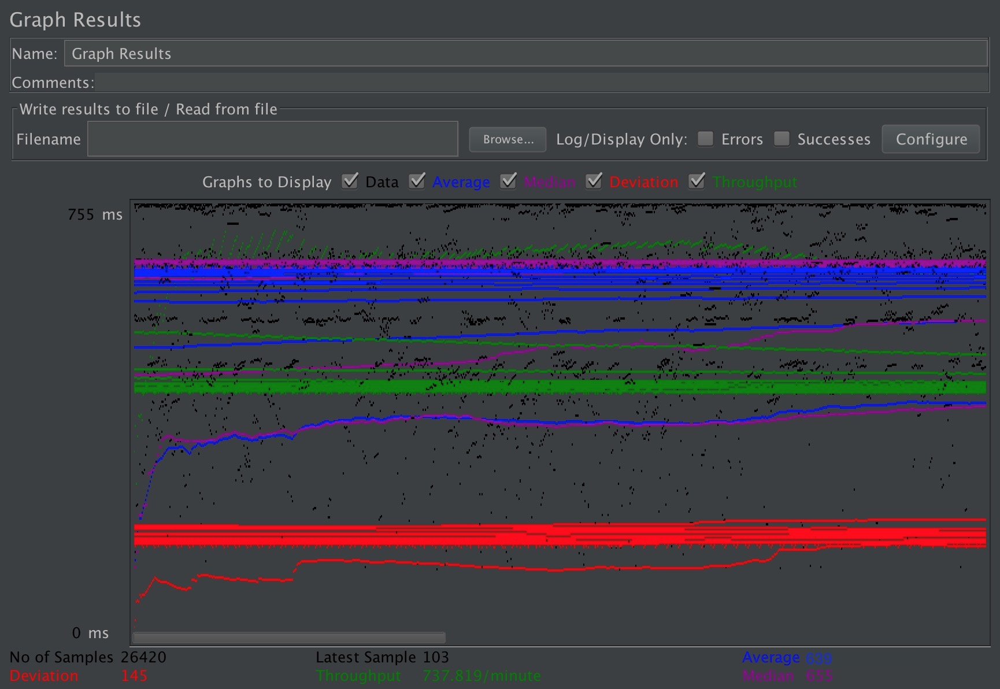
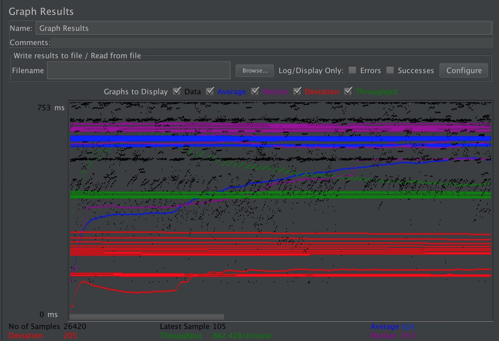
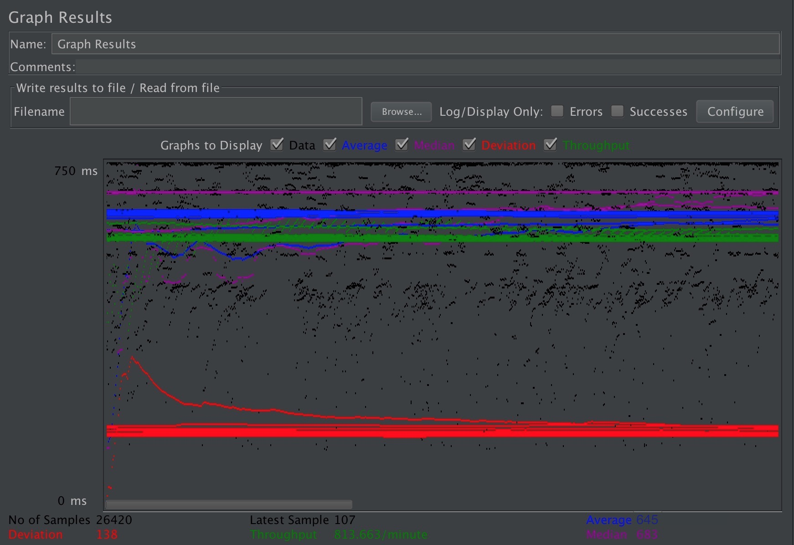

| Single-instance version cases |
Graph Results Screenshot |
Average Query Time(ms) |
Average Search Servlet Time(ms) |
Average JDBC Time(ms) |
Analysis |
| Case 1: HTTP/1 thread |
 |
112 ms |
42387616.20893262 ns |
42194899.51703255 ns |
-- |
| Case 2: HTTP/10 threads |
 |
586 ms |
384814590.7996972 ns |
384707546.1112793 ns |
-- |
| Case 3: HTTPS/10 threads |
 |
639 ms |
388789177.6052233 ns |
388626646.2250567 ns |
-- |
| Case 4: HTTP/10 threads/No prepared statements |
 |
624 ms |
387180518.5873581 ns |
387057322.2050719 ns |
-- |
| Case 5: HTTP/10 threads/No connection pooling |
 |
645 ms |
396310391.9125662 ns |
396119629.6071158 ns |
-- |